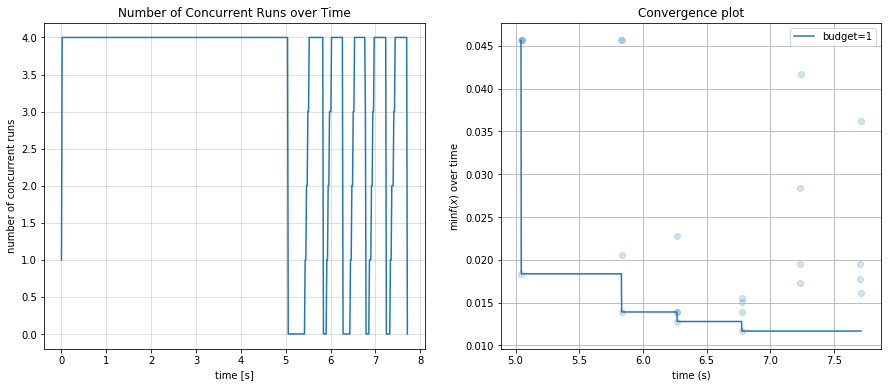
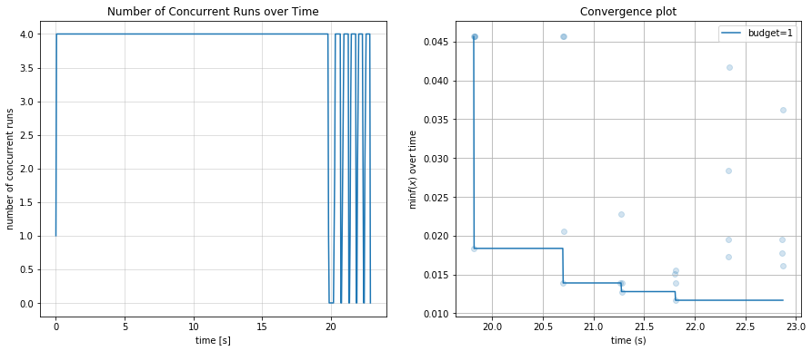
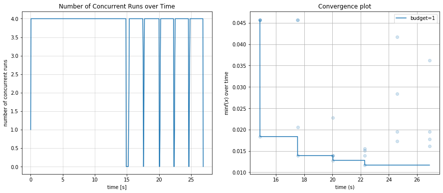

09. MapReduce并行策略¶
我们在教程 04. Explain the Otimizer in Detail 就讨论过 UltraOpt 优化器的运行机制以及通过MapReduce计算策略实现并行计算的原理。故本教程不详细阐述UltraOpt的MapReduce并行策略具体原理，只讨论如何通过合理的配置在不同的计算环境下实现 MapReduce。
UltraOpt实现MapReduce的本质是让优化器推荐多个配置，然后让不同的计算结点并行地对这些配置进行评价(Map)，然后等待所有计算结点完成计算并收集结果(Reduce)，用这个结果对优化器进行更新。
UltraOpt使用joblib.Parallel实现并行计算
[1]:
from joblib import parallel_backend
[2]:
from ultraopt import fmin
from ultraopt.tests.automl import evaluator, config_space
[5]:
import warnings
warnings.filterwarnings("ignore")
[11]:
import pylab as plt
[3]:
n_jobs = 4
单机threading后端¶
[7]:
with parallel_backend("threading"):
result = fmin(evaluator, config_space, n_jobs=n_jobs, parallel_strategy="MapReduce", n_iterations=40)
100%|██████████| 40/40 [00:08<00:00, 4.95trial/s, best loss: 0.012]
[17]:
plt.rcParams['figure.figsize'] = (15, 6)
plt.subplot(1, 2, 1)
result.plot_concurrent_over_time();
plt.subplot(1, 2, 2)
result.plot_convergence_over_time();

单机multiprocessing后端¶
[18]:
with parallel_backend("multiprocessing"):
result = fmin(evaluator, config_space, n_jobs=n_jobs, parallel_strategy="MapReduce", n_iterations=40)
100%|██████████| 40/40 [00:09<00:00, 4.43trial/s, best loss: 0.012]
[19]:
plt.rcParams['figure.figsize'] = (15, 6)
plt.subplot(1, 2, 1)
result.plot_concurrent_over_time();
plt.subplot(1, 2, 2)
result.plot_convergence_over_time();

单机loky后端¶
[25]:
with parallel_backend("loky"):
result = fmin(evaluator, config_space, n_jobs=n_jobs, parallel_strategy="MapReduce", n_iterations=40)
100%|██████████| 40/40 [00:07<00:00, 5.18trial/s, best loss: 0.012]
[26]:
plt.rcParams['figure.figsize'] = (15, 6)
plt.subplot(1, 2, 1)
result.plot_concurrent_over_time();
plt.subplot(1, 2, 2)
result.plot_convergence_over_time();

集群pyspark后端¶
因为在jupyter中运行joblibspark会抛出ModuleNotFoundError: No module named 'ipykernel'异常，故我们提供一个pyspark_mapreduce.py脚本
运行后，我们加载 pyspark-result.pkl 进行数据分析
[31]:
from joblib import load
result = load("pyspark-result.pkl")
[32]:
plt.rcParams['figure.figsize'] = (15, 6)
plt.subplot(1, 2, 1)
result.plot_concurrent_over_time();
plt.subplot(1, 2, 2)
result.plot_convergence_over_time();

pyspark花了接近20秒启动计算环境。
集群ray后端¶
[33]:
from ray.util.joblib import register_ray
register_ray()
[34]:
with parallel_backend("ray"):
result = fmin(evaluator, config_space, n_jobs=n_jobs, parallel_strategy="MapReduce", n_iterations=40)
0%| | 0/40 [00:00<?, ?trial/s, best loss=?]
WARNING:ray.util.multiprocessing.pool:The 'context' argument is not supported using ray. Please refer to the documentation for how to control ray initialization.
2021-01-02 16:47:39,504 INFO resource_spec.py:212 -- Starting Ray with 4.74 GiB memory available for workers and up to 2.37 GiB for objects. You can adjust these settings with ray.init(memory=<bytes>, object_store_memory=<bytes>).
2021-01-02 16:47:39,619 WARNING services.py:923 -- Redis failed to start, retrying now.
2021-01-02 16:47:39,852 WARNING services.py:923 -- Redis failed to start, retrying now.
2021-01-02 16:47:40,138 INFO services.py:1165 -- View the Ray dashboard at localhost:8265
(pid=958) /home/tqc/miniconda3/envs/ask/lib/python3.6/site-packages/sklearn/svm/_base.py:947: ConvergenceWarning: Liblinear failed to converge, increase the number of iterations.
(pid=958) "the number of iterations.", ConvergenceWarning)
(pid=958) /home/tqc/miniconda3/envs/ask/lib/python3.6/site-packages/sklearn/svm/_base.py:947: ConvergenceWarning: Liblinear failed to converge, increase the number of iterations.
(pid=958) "the number of iterations.", ConvergenceWarning)
(pid=958) /home/tqc/miniconda3/envs/ask/lib/python3.6/site-packages/sklearn/svm/_base.py:947: ConvergenceWarning: Liblinear failed to converge, increase the number of iterations.
(pid=958) "the number of iterations.", ConvergenceWarning)
(pid=961) /home/tqc/miniconda3/envs/ask/lib/python3.6/site-packages/sklearn/svm/_base.py:947: ConvergenceWarning: Liblinear failed to converge, increase the number of iterations.
(pid=961) "the number of iterations.", ConvergenceWarning)
(pid=961) /home/tqc/miniconda3/envs/ask/lib/python3.6/site-packages/sklearn/svm/_base.py:947: ConvergenceWarning: Liblinear failed to converge, increase the number of iterations.
(pid=961) "the number of iterations.", ConvergenceWarning)
(pid=961) /home/tqc/miniconda3/envs/ask/lib/python3.6/site-packages/sklearn/svm/_base.py:947: ConvergenceWarning: Liblinear failed to converge, increase the number of iterations.
(pid=961) "the number of iterations.", ConvergenceWarning)
10%|█ | 4/40 [00:03<00:34, 1.04trial/s, best loss: 0.018]
2021-01-02 16:47:43,332 WARNING pool.py:340 -- The 'context' argument is not supported using ray. Please refer to the documentation for how to control ray initialization.
(pid=1124) /home/tqc/miniconda3/envs/ask/lib/python3.6/site-packages/sklearn/svm/_base.py:947: ConvergenceWarning: Liblinear failed to converge, increase the number of iterations.
(pid=1124) "the number of iterations.", ConvergenceWarning)
(pid=1124) /home/tqc/miniconda3/envs/ask/lib/python3.6/site-packages/sklearn/svm/_base.py:947: ConvergenceWarning: Liblinear failed to converge, increase the number of iterations.
(pid=1124) "the number of iterations.", ConvergenceWarning)
(pid=1127) /home/tqc/miniconda3/envs/ask/lib/python3.6/site-packages/sklearn/svm/_base.py:947: ConvergenceWarning: Liblinear failed to converge, increase the number of iterations.
(pid=1127) "the number of iterations.", ConvergenceWarning)
(pid=1124) /home/tqc/miniconda3/envs/ask/lib/python3.6/site-packages/sklearn/svm/_base.py:947: ConvergenceWarning: Liblinear failed to converge, increase the number of iterations.
(pid=1124) "the number of iterations.", ConvergenceWarning)
(pid=1127) /home/tqc/miniconda3/envs/ask/lib/python3.6/site-packages/sklearn/svm/_base.py:947: ConvergenceWarning: Liblinear failed to converge, increase the number of iterations.
(pid=1127) "the number of iterations.", ConvergenceWarning)
(pid=1127) /home/tqc/miniconda3/envs/ask/lib/python3.6/site-packages/sklearn/svm/_base.py:947: ConvergenceWarning: Liblinear failed to converge, increase the number of iterations.
(pid=1127) "the number of iterations.", ConvergenceWarning)
20%|██ | 8/40 [00:06<00:28, 1.14trial/s, best loss: 0.018]
2021-01-02 16:47:46,111 WARNING pool.py:340 -- The 'context' argument is not supported using ray. Please refer to the documentation for how to control ray initialization.
(pid=1161) /home/tqc/miniconda3/envs/ask/lib/python3.6/site-packages/sklearn/svm/_base.py:947: ConvergenceWarning: Liblinear failed to converge, increase the number of iterations.
(pid=1161) "the number of iterations.", ConvergenceWarning)
(pid=1161) /home/tqc/miniconda3/envs/ask/lib/python3.6/site-packages/sklearn/svm/_base.py:947: ConvergenceWarning: Liblinear failed to converge, increase the number of iterations.
(pid=1161) "the number of iterations.", ConvergenceWarning)
(pid=1161) /home/tqc/miniconda3/envs/ask/lib/python3.6/site-packages/sklearn/svm/_base.py:947: ConvergenceWarning: Liblinear failed to converge, increase the number of iterations.
(pid=1161) "the number of iterations.", ConvergenceWarning)
(pid=1158) /home/tqc/miniconda3/envs/ask/lib/python3.6/site-packages/sklearn/svm/_base.py:947: ConvergenceWarning: Liblinear failed to converge, increase the number of iterations.
(pid=1158) "the number of iterations.", ConvergenceWarning)
(pid=1158) /home/tqc/miniconda3/envs/ask/lib/python3.6/site-packages/sklearn/svm/_base.py:947: ConvergenceWarning: Liblinear failed to converge, increase the number of iterations.
(pid=1158) "the number of iterations.", ConvergenceWarning)
(pid=1158) /home/tqc/miniconda3/envs/ask/lib/python3.6/site-packages/sklearn/svm/_base.py:947: ConvergenceWarning: Liblinear failed to converge, increase the number of iterations.
(pid=1158) "the number of iterations.", ConvergenceWarning)
30%|███ | 12/40 [00:09<00:22, 1.24trial/s, best loss: 0.018]
2021-01-02 16:47:48,661 WARNING pool.py:340 -- The 'context' argument is not supported using ray. Please refer to the documentation for how to control ray initialization.
(pid=1283) /home/tqc/miniconda3/envs/ask/lib/python3.6/site-packages/sklearn/svm/_base.py:947: ConvergenceWarning: Liblinear failed to converge, increase the number of iterations.
(pid=1283) "the number of iterations.", ConvergenceWarning)
(pid=1283) /home/tqc/miniconda3/envs/ask/lib/python3.6/site-packages/sklearn/svm/_base.py:947: ConvergenceWarning: Liblinear failed to converge, increase the number of iterations.
(pid=1283) "the number of iterations.", ConvergenceWarning)
(pid=1283) /home/tqc/miniconda3/envs/ask/lib/python3.6/site-packages/sklearn/svm/_base.py:947: ConvergenceWarning: Liblinear failed to converge, increase the number of iterations.
(pid=1283) "the number of iterations.", ConvergenceWarning)
(pid=1284) /home/tqc/miniconda3/envs/ask/lib/python3.6/site-packages/sklearn/svm/_base.py:947: ConvergenceWarning: Liblinear failed to converge, increase the number of iterations.
(pid=1284) "the number of iterations.", ConvergenceWarning)
(pid=1284) /home/tqc/miniconda3/envs/ask/lib/python3.6/site-packages/sklearn/svm/_base.py:947: ConvergenceWarning: Liblinear failed to converge, increase the number of iterations.
(pid=1284) "the number of iterations.", ConvergenceWarning)
(pid=1284) /home/tqc/miniconda3/envs/ask/lib/python3.6/site-packages/sklearn/svm/_base.py:947: ConvergenceWarning: Liblinear failed to converge, increase the number of iterations.
(pid=1284) "the number of iterations.", ConvergenceWarning)
40%|████ | 16/40 [00:12<00:18, 1.27trial/s, best loss: 0.018]
2021-01-02 16:47:51,966 WARNING pool.py:340 -- The 'context' argument is not supported using ray. Please refer to the documentation for how to control ray initialization.
(pid=1370) /home/tqc/miniconda3/envs/ask/lib/python3.6/site-packages/sklearn/svm/_base.py:947: ConvergenceWarning: Liblinear failed to converge, increase the number of iterations.
(pid=1370) "the number of iterations.", ConvergenceWarning)
(pid=1370) /home/tqc/miniconda3/envs/ask/lib/python3.6/site-packages/sklearn/svm/_base.py:947: ConvergenceWarning: Liblinear failed to converge, increase the number of iterations.
(pid=1370) "the number of iterations.", ConvergenceWarning)
(pid=1373) /home/tqc/miniconda3/envs/ask/lib/python3.6/site-packages/sklearn/svm/_base.py:947: ConvergenceWarning: Liblinear failed to converge, increase the number of iterations.
(pid=1373) "the number of iterations.", ConvergenceWarning)
(pid=1370) /home/tqc/miniconda3/envs/ask/lib/python3.6/site-packages/sklearn/svm/_base.py:947: ConvergenceWarning: Liblinear failed to converge, increase the number of iterations.
(pid=1370) "the number of iterations.", ConvergenceWarning)
(pid=1373) /home/tqc/miniconda3/envs/ask/lib/python3.6/site-packages/sklearn/svm/_base.py:947: ConvergenceWarning: Liblinear failed to converge, increase the number of iterations.
(pid=1373) "the number of iterations.", ConvergenceWarning)
(pid=1373) /home/tqc/miniconda3/envs/ask/lib/python3.6/site-packages/sklearn/svm/_base.py:947: ConvergenceWarning: Liblinear failed to converge, increase the number of iterations.
(pid=1373) "the number of iterations.", ConvergenceWarning)
50%|█████ | 20/40 [00:15<00:15, 1.29trial/s, best loss: 0.018]
2021-01-02 16:47:54,858 WARNING pool.py:340 -- The 'context' argument is not supported using ray. Please refer to the documentation for how to control ray initialization.
60%|██████ | 24/40 [00:17<00:11, 1.38trial/s, best loss: 0.014]
2021-01-02 16:47:57,208 WARNING pool.py:340 -- The 'context' argument is not supported using ray. Please refer to the documentation for how to control ray initialization.
70%|███████ | 28/40 [00:20<00:08, 1.44trial/s, best loss: 0.013]
2021-01-02 16:47:59,741 WARNING pool.py:340 -- The 'context' argument is not supported using ray. Please refer to the documentation for how to control ray initialization.
80%|████████ | 32/40 [00:22<00:05, 1.52trial/s, best loss: 0.012]
2021-01-02 16:48:02,005 WARNING pool.py:340 -- The 'context' argument is not supported using ray. Please refer to the documentation for how to control ray initialization.
90%|█████████ | 36/40 [00:24<00:02, 1.58trial/s, best loss: 0.012]
2021-01-02 16:48:04,306 WARNING pool.py:340 -- The 'context' argument is not supported using ray. Please refer to the documentation for how to control ray initialization.
100%|██████████| 40/40 [00:26<00:00, 1.49trial/s, best loss: 0.012]
[35]:
plt.rcParams['figure.figsize'] = (15, 6)
plt.subplot(1, 2, 1)
result.plot_concurrent_over_time();
plt.subplot(1, 2, 2)
result.plot_convergence_over_time();

集群dask后端¶
[36]:
from dask.distributed import Client
import joblib
client = Client(processes=False) # create local cluster
# client = Client("scheduler-address:8786") # or connect to remote cluster
[37]:
with parallel_backend("dask"):
result = fmin(evaluator, config_space, n_jobs=n_jobs, parallel_strategy="MapReduce", n_iterations=40)
100%|██████████| 40/40 [00:13<00:00, 3.07trial/s, best loss: 0.012]
[38]:
plt.rcParams['figure.figsize'] = (15, 6)
plt.subplot(1, 2, 1)
result.plot_concurrent_over_time();
plt.subplot(1, 2, 2)
result.plot_convergence_over_time();